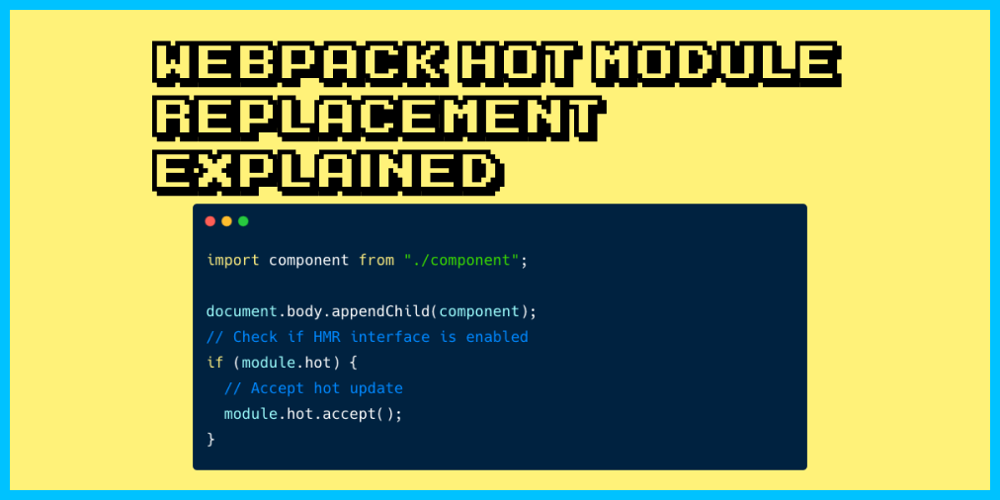
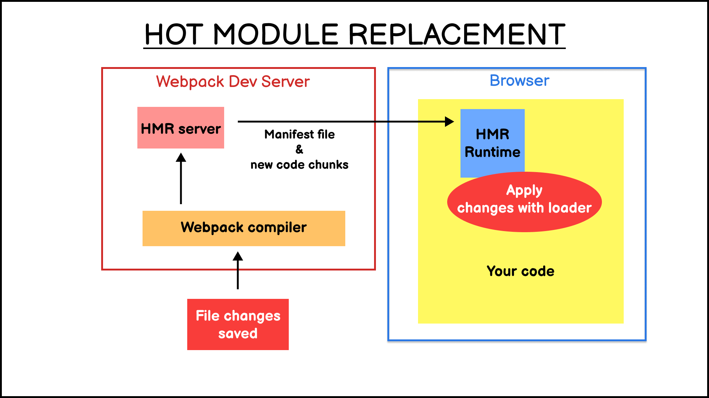
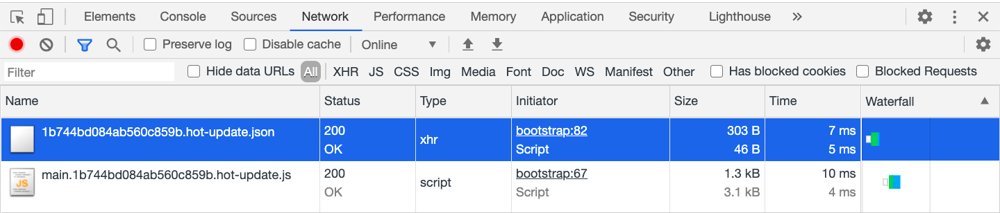

在开发 JavaScript 应用程序时，每次我们保存代码更改后，我们都需要重新加载浏览器以刷新用户界面。
像 Webpack 之类的开发者工具可以通过监视模式来监听项目文件的更改。一旦检测到更改，Webpack 就会自动地重新构建应用程序并重新加载浏览器。
但是很快，开发者们就开始思考，有没有一种方法可以在不重新加载浏览器的情况下保存和更新页面的更改？毕竟，重新加载意味着会丢失在 UI 上的任何执行的状态：
而模块热替换（Hot Module Replacement，HMR）功能就是为了解决这种问题，并且现在已经成为了为前端开发提速的有力助手。
HMR 让我们可以在应用程序运行时交换、添加或删除 JavaScript 模块，而无需重新加载浏览器。在 Webpack 中是通过在 Webpack 开发服务器（webpack-dev-server）中创建一个 HMR 服务器实现的，而该服务器会通过 Websocket 与浏览器中的 HMR 运行时进行通信。

交换模块的过程如下：
bundle.js 文件中。通过启用 HMR 功能，我们无需刷新浏览器即可让浏览器下载新的软件包并解包应用更改。HMR 运行时将接受来自 HMR 服务器的传入请求，包含清单文件和代码块，替换浏览器中的当前文件。
在运行启用了 HMR 的应用程序时保存代码更改时，我们实际上可以在 “Network” 选项卡上看到从 HMR 服务器发送的热更新文件：

当“热更新”无法替换浏览器中的代码时，HMR 运行时将通知 webpack-dev-server。然后，webpack-dev-server 将刷新浏览器以下载新的 bundle.js 文件。我们可以通过在 Webpack 配置中添加 hotOnly：true 来禁用此行为。
为了在项目中启用 HMR，我们需要让我们的应用程序知道如何处理热更新。我们可以通过实例化 Webpack 公开的 module.hot API 来实现：
首先，我们需要向 Webpack 配置文件中添加 hot: true 来启用 HMR，如下所示：
// webpack.config.js
module.exports = {
entry: {
app: './src/index.js',
},
devtool: 'inline-source-map',
devServer: {
hot: true,
// ... 忽略掉其他配置
},
plugins: [
// 开启这个插件
new webpack.HotModuleReplacementPlugin(),
],
}
之后，我们必须使用 module.hot API 处理传入的 HMR 请求。这是一个普通的 JS 项目的实现示例：
// index.js
import component from "./component";
document.body.appendChild(component);
// 检查是否支持 HMR 接口
if (module.hot) {
// 支持热更新
module.hot.accept();
}
一旦告诉 Webpack 我们支持 HMR，HMR 运行时和加载程序就会接管处理更新。
但是，为复杂的应用程序实现 HMR 可能会很棘手，因为我们可能会遇到不希望的副作用，例如仍然绑定到旧函数的事件处理程序，尤其是当你使用 React 或 Vue 之类的库。此外，我们还需要确保仅在开发中启用 HMR。
不过在我们尝试自己实施 HMR 之前，建议你先为我们的项目寻找一下可用的解决方案，因为 HMR 已经集成到许多流行的 JavaScript 应用程序生成器中。
Create React App 和 Next.js 都内置了 React Fast Refresh，React 特定的热重载实现。而 Vue CLI 3 的 HMR 则是通过 vue-loader 实现的。Svelte 和 Angular 也有自己的 HMR 集成，因此我们没有必要从头开始编写集成。
热模块替换能让我们无需刷新浏览器即可在浏览器中查看代码更改所带来的效果，从而可以保留前端应用程序的状态。
但是实现 HMR 可能很棘手，因为它会产生一些副作用。幸运的是，HMR 已在许多 JavaScript 应用程序生成器中实现。因此我们可以直接享受此功能，而不必自己实现。
如果发现译文存在错误或其他需要改进的地方，欢迎到 掘金翻译计划 对译文进行修改并 PR，也可获得相应奖励积分。文章开头的 本文永久链接 即为本文在 GitHub 上的 MarkDown 链接。
掘金翻译计划 是一个翻译优质互联网技术文章的社区，文章来源为 掘金 上的英文分享文章。内容覆盖 Android、iOS、前端、后端、区块链、产品、设计、人工智能等领域，想要查看更多优质译文请持续关注 掘金翻译计划、官方微博、知乎专栏。